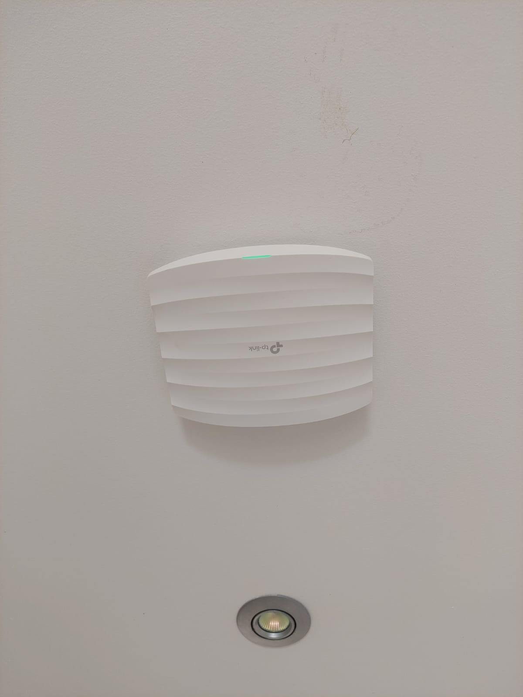
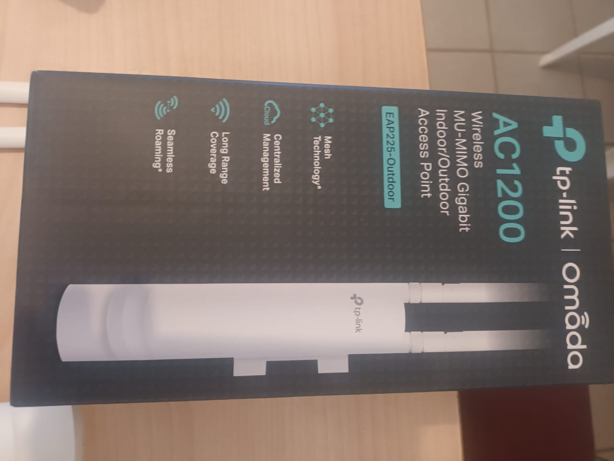
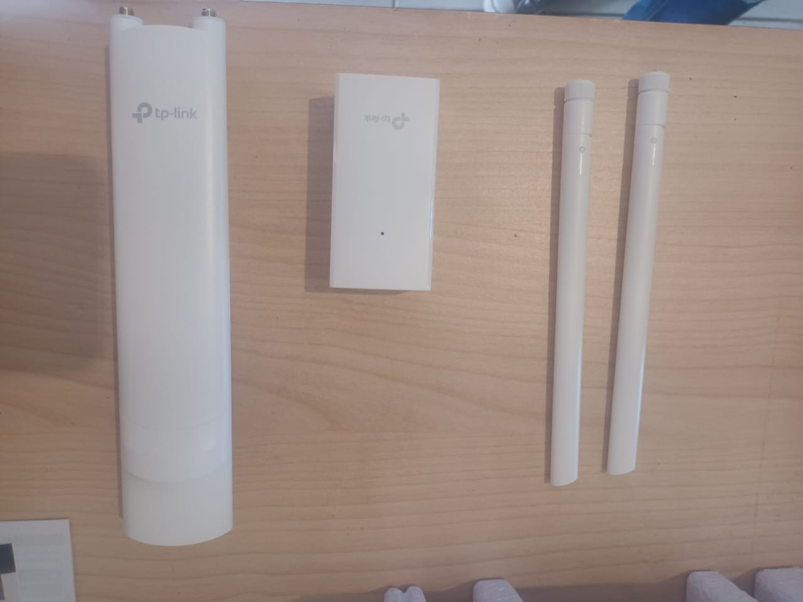

Pour effectuer ma veille technologique, j’utilise « Google Alertes « , qui me crée des alertes toutes les semaines.
Celui-ci me permet d’être toujours au courant de toutes les actualités que je souhaite.
J’ai ajouté à celui-ci, différentes sources telles que : ANSSI, Le Monde Informatique, …
Pour ma veille technologique j'ai choisi La Blockchain
je consulte regulierement le site de fandroid

Introduction

Passionné par les sciences et les technologies depuis mon plus jeune âge,
mon parcours académique et professionnel reflète une volonté constante d’explorer et de maîtriser les domaines liés à l’informatique et aux systèmes d’information.
Après une seconde générale où j’ai choisi les options Sciences de la Vie et de la Terre (SVT) et Numérique et Sciences Informatiques (NSI).
J’ai rapidement orienté mes études vers le Brevet de Technicien Supérieur en Services Informatiques aux Organisations (BTS SIO),
au sain de l'AMEP.
Au cours de la première année j'ai pris le choix de porter une "double casquette" en optant pour la spécialité Solutions d’Infrastructure, Systèmes et Réseaux (SISR).
Ce choix s’est avéré être une étape déterminante dans mon développement personnel et professionnel.
Grâce à cette formation, j’ai acquis des compétences techniques solides en administration des systèmes et des réseaux,
en cybersécurité, et en gestion des infrastructures informatiques.
Parallèlement, j’ai développé des qualités essentielles telles que la rigueur, la résolution de problèmes complexes et la capacité à travailler en équipe.
Parcours
Spécialité
Parcours en BTS SIO – Première et Deuxième Année
Objectif : Acquérir les bases fondamentales en développement logiciel, administration système et réseaux.
Description :
La première année de BTS SIO m'a permis de découvrir les deux spécialités (SLAM et SISR) et de consolider mes compétences en programmation, bases de données, et gestion d'infrastructure.
Activités et compétences acquises :
- Programmation (Python, Java) : Création d'applications console, manipulation des structures de données, et initiation à la POO.
- Bases de données (SQL) : Conception de schémas relationnels, requêtes CRUD, et utilisation de systèmes comme MySQL ou PostgreSQL.
- Réseaux (CCNA 1) : Apprentissage des topologies réseau, modèle OSI/TCP-IP, et configuration basique de switchs/routiers.
- Systèmes (Windows Server, Linux) : Gestion des utilisateurs, permissions, et services réseau (DHCP, DNS).
Objectif : Approfondir la spécialité SISR avec des projets concrets et des technologies avancées.
Description :
La deuxième année a été axée sur la mise en pratique via des simulations d'environnements professionnels, notamment avec des projets comme la refonte du réseau de la M2L (Maison des Ligues de Lorraine).
Activités et compétences acquises :
- Virtualisation (VMware, Proxmox) : Déploiement de machines virtuelles et gestion de clusters.
- Sécurité informatique : Mise en place de pare-feux (pfSense), VPN, et détection d'intrusions.
- Routage dynamique (OSPF) : Configuration de réseaux multi-sites avec redondance.
- Scripting (Bash, PowerShell) : Automatisation de tâches système (sauvegardes, monitoring).
- Projet M2L :
- Déploiement d'un annuaire LDAP (OpenLDAP).
- Migration IPv4 vers IPv6.
- Mise en place d'un serveur de fichiers haute disponibilité (NAS).
Bilan : Ce parcours m'a permis de développer une double compétence en réseaux et systèmes, tout en renforçant mon autonomie et ma capacité à travailler en équipe (méthodologie Agile, gestion de projet). Je suis désormais capable de concevoir, sécuriser et dépanner une infrastructure répondant aux besoins des entreprises.
Sécurité informatique
Au sein de mas speciliter
Objectif : Protéger les données et les systèmes de la M2L contre les menaces externes et internes.
Description :
Cette section aborde les aspects clés de la sécurité informatique, y compris la mise en place de politiques de sécurité, la configuration des règles de filtrage, et la sensibilisation des utilisateurs.
Compétences acquises :
- Politiques de sécurité : Déploiement de pare-feu, antivirus, et anti-malware pour protéger les systèmes.
- Règles de filtrage : Configuration des règles de contrôle d'accès pour limiter les accès non autorisés.
- Sensibilisation des utilisateurs : Formation des utilisateurs aux bonnes pratiques de sécurité pour réduire les risques.
- Audit de sécurité : Identification et correction des vulnérabilités pour renforcer la sécurité globale.
Mission 4 : Mise en place d'un DHCP relais et configuration avec Active Directory
Objectif : Simplifier la gestion des adresses IP sur le réseau de la M2L en déployant un serveur DHCP centralisé avec relais, intégré à Active Directory.
Tâches principales :
- Installation du rôle DHCP : Ajout du rôle "Serveur DHCP" via le Gestionnaire de serveur.
- Configuration des étendues DHCP : Définition des plages d'adresses IP, durée de bail, etc.
- Activation du relais DHCP : Utilisation de l'option IP Helper sur les routeurs ou switchs compatibles.
- Intégration avec Active Directory : Autorisation du serveur DHCP dans Active Directory pour éviter les conflits.
- Tests et validation : Vérification que les clients réseau obtiennent bien une adresse IP via le serveur DHCP.
- Documentation : Rédaction d'un guide de configuration pour le DHCP relais et son intégration avec Active Directory.
üìú Mes Certifications
En BTS SIO SISR, j'ai bossé sur plusieurs certifs importantes pour valider mes compétences pro. Voici ce que j'ai pu obtenir :

Certification PIX
Pourquoi ? Obligatoire pour valider le BTS
Ce que j'ai appris :
- üîç Recherche info avanc√©e
- üìß Com' pro en ligne
- üîê S√©curit√© des donn√©es
+ : Valable à vie, reconnue par l'État
Voir le référentiel →SecNumedu
Formation : 1 journée intensive
Points clés :
- üõ°Ô∏è Protection contre les attaques
- üìù Conformit√© RGPD
- üí° Culture s√©curit√©
+ : Un gros plus pour le CV dans la cybersécurité
Site ANSSI →
Cisco CyberOps
Durée : 30h en ligne
Acquis techniques :
- üïµÔ∏è‚Äç‚ôÇÔ∏è Analyse de logs
- üåê S√©curit√© r√©seau
- üîë Principes cryptographiques
Projet : Mise en place d'un SIEM basique
Voir le programme →
Cybersecurity Fundamentals
Durée : 40h en ligne
Points forts :
- üõ°Ô∏è Ethical Hacking basics
- üîç Analyse de vuln√©rabilit√©s
- üö® R√©ponse aux incidents
Projet : Audit de sécurité d'une app web
Voir le cours →Veille Informatique
Stage
Fédération des Églises Adventiste de la Martinique: Accueil
Installation et Configuration des Réseaux

L'installation et la configuration de réseaux sont des compétences clés que j'ai développées au cours de mes études et de mes expériences professionnelles. J'ai travaillé sur des projets variés, allant de la mise en place de petits réseaux domestiques à des infrastructures complexes pour des entreprises et particuliers.
EAP245 Point d'accès WiFi bi-bande AC1750 PoE Gigabit

- Débit WiFi bi-bande simultanée de 450 Mbps en 2.4 GHz et de 1300 Mbps en 5 GHz pouvant atteindre une bande passante totale de 1750 Mbps
- Conçu pour les fortes densités de clients. Idéal pour les entreprises ayant besoin d'un réseau Wifi fiable 24h/24.
- Le contrôleur logiciel WiFi inclus offre une administration centralisée et simplifiée pour une centaine d'EAP
- Support du Power over Ethernet (802.3at/af) pour une installation facile sans câblages supplémentaires
- Un portail captif fournit une méthode pratique d'authentification des clients WiFi invités
- Band Steering pour basculer automatiquement les appareils bi-bande sur la fréquence 5 GHz pour des connexions plus rapides
- L'équilibre de la charge permet à un grand nombre d'utilisateurs de bénéficier d'un réseau optimal
- Prise en charge du VLAN pour une gestion réseau améliorée


Installation et Configuration de la Vidéosurveillance

J'ai également travaillé sur l'installation et la configuration de systèmes de vidéosurveillance. Cela inclut la mise en place de caméras, la configuration des enregistreurs numériques et l'intégration des systèmes de surveillance avec les réseaux existants.
Installation et Configuration de Starlink

J'ai participé à l'installation et à la configuration de systèmes Starlink pour fournir un accès Internet haut débit dans des zones rurales.
Cela inclut l'installation des antennes paraboliques et la configuration des routeurs pour une connectivité optimale.
analyser les meilleur emplacement de l'antenne en respectant des contrainte esthétique et choix de l'offre la plus adapter ou nécessaire au besoin du client
Ces étapes m’ont permis de détecter et de résoudre des problèmes efficacement tout en documentant ce que je faisais pour expliquer les solutions au client.
Installation et Configuration des Onduleurs
J'ai travaillé sur l'installation et la configuration d'onduleurs pour assurer une alimentation électrique stable et sécurisée pour les équipements informatiques critiques. Cela inclut la configuration des paramètres de basculement et la gestion des batteries.
Maintenance des Systèmes Informatiques
 >
>
La maintenance des systèmes informatiques est une partie essentielle de mon travail. Cela inclut la surveillance des performances, la résolution des problèmes et la mise à jour des logiciels et du matériel pour assurer un fonctionnement optimal.